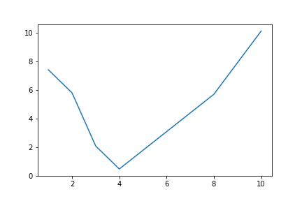

Data Analysis in Python¶
You may be familiar with viewing, graphing, and performing calculations on your data in Excel, MATLAB, or R. We’ll show you in this tutorial that Python can be just as useful for data analysis!
Calculations on Sets of Data¶
Given a Python list of values and a calculation you need to perform on each value, you might write a loop that runs the calculation for each value. After all, Python can’t run calculations on every element in a list at once, called element-wise operations, using basic operators:
x = [1, 2, 3, 4, 5]
x/2
TypeError: unsupported operand type(s) for /: 'list' and 'int'
Fortunately, there are other data types that can do this! If our data is stored as a NumPy array, we can use the usual +, -, *, /, %, and ** operators to add (or subtract, etc.) each value in the array with either one constant value or values in another NumPy array (of the same dimension).
Here is an example that calculates the hypotenuse for 5 triangles. We use np.array() to convert Python lists to NumPy arrays. Also, many of NumPy’s mathematical functions, such as np.sqrt(), can perform both scalar (number to number) and element-wise (array to array) operations.
import numpy as np
a = np.array([1, 3, 5, 7, 9])
b = np.array([0, 4, 12, 24, 40])
c = np.sqrt(a ** 2 + b ** 2)
c
Output: array([ 1., 5., 13., 25., 41.])
NumPy Arrays and Units¶
NumPy functions and arrays are also compatible with units! However, units must be attached to the entire array, not to each element. To demonstrate,
from aguaclara.core.units import u
x = np.array([1*u.m, 2*u.m, 3*u.m])
ValueError: setting an array element with a sequence.
gives a ValueError, but the next example works.
x = np.array([1, 2, 3]) * u.m
x / (4 * u.s)
Output: <Quantity([0.25 0.5 0.75], 'meter / second')>
WARNING: np.append(array, values), which appends values to the end of array, removes units from both the NumPy array and the values. If you use this function, you may need to reapply units to the new array after doing so.
Reading Data Files with Pandas¶
Pandas is a Python package for data manipulation and analysis. We’ll use pd to refer to Pandas from here on.
Loading Data Files¶
Most spreadsheets can be loaded into Python using the Pandas function pd.read_csv(). A CSV (Comma Separated Value) file is a text file that represents a spreadsheet by separating rows with new lines and columns with commas. A TSV (Tab Separated Value) file separates columns with tabs and can be read with the same function. pd.read_csv() outputs a DataFrame, a data structure in the Pandas package for tabular data. Each row and each column of a DataFrame is a Series, another data structure in Pandas.
To read the CSV file /path/to/file/filename.csv and store the resulting DataFrame, we can write:
import pandas as pd
df = pd.read_csv('/path/to/file/filename.csv')
To read the TSV file /path/to/file/filename.tsv, we do the same but specify that the separator is a tab (the default is a comma):
df = pd.read_csv('/path/to/file/filename.tsv', sep='\t')
In addition to local directories, pd.read_csv() can also accept URL’s that lead to raw spreadsheet files.
Getting Data¶
Given a DataFrame df, we can get its columns, rows, and specific entries with these functions:
Getting Labels and Shape
df.columns: returns the column labels indfdf.index: returns the row labels indfdf.shape: returns a tuple of the number of rows and the number of columns indf
Using Labels
df[column_label(s)]: returns the column(s) with the given label(s) (a string/string list) as a Series/DataFramedf.loc[row_label(s)]: returns the row(s) with the given label(s) (a string/string list) as a Series/DataFrame * Multiple row labels can also be given as a slice. For example,df.loc[start_label : end_label]returns the rows from the row labeledstart_labelto that labeledend_label, inclusive.df.loc[row_label(s), column_label(s)]: returns the entry/entries in the given row(s) that are also in the given column(s) as a single value/DataFrame * Row slices also apply here (see above sub-bullet).
Using Positions
df.iloc[row_index(es)]: returns the row(s) of the given index(es) (an integer/integer list) as a Series/DataFramedf.iloc[:, column_index(es)]: returns the column(s) with the given index(es) (an integer/integer list) as a Series/DataFramedf.iloc[row_index(s), column_index(s)]: returns the entry/entries in the given row(s) that are also in the given column(s) as a single value/DataFrame
IMPORTANT: All indexes start from 0. Also, both rows and columns can be given as slices. Unlike for the loc[] function, the last index in a positional slice is exclusive. For example, df.iloc[i : j] returns the ``i``th row to the ``j-1``th row.
Using Conditionals
df.loc[booleans]ordf.iloc[booleans]: returns a DataFrame of rows corresponding with values ofTruein the given boolean array or Series (the array/Series must have the same length as the row axis)
Here are some example usages of the functions. Except for the last example, two lines of code (marked by >>>) followed by one output means that the two lines produce the same output.
Note that for this data, we can use row numbers for both loc[] and iloc[] because the row labels are numbers (see the output of oxygen_solubility.index).
>>> import pandas as pd
>>> path = 'https://raw.githubusercontent.com/AguaClara/aguaclara_tutorial/research-docs/data/Oxygen%20Solubility.tsv'
>>> oxygen_solubility = pd.read_csv(path, sep='\t')
>>> oxygen_solubility.columns
Index(['Temperature (degC)', 'Solubility (mg/L)',
'Dissolved Concentration (mg/L)'],
dtype='object')
>>> oxygen_solubility.index
RangeIndex(start=0, stop=11, step=1)
>>> oxygen_solubility['Temperature (degC)']
>>> oxygen_solubility.iloc[:,0]
0 0
1 5
2 10
3 15
4 20
5 25
6 30
7 35
8 40
9 45
10 50
Name: Temperature (degC), dtype: int64
>>> oxygen_solubility[['Temperature (degC)', 'Solubility (mg/L)']]
>>> oxygen_solubility.iloc[:, 0:2]
Temperature (degC) Solubility (mg/L)
0 0 14.6
1 5 12.8
2 10 11.3
3 15 10.1
4 20 9.1
5 25 8.3
6 30 7.6
7 35 7.0
8 40 6.5
9 45 6.0
10 50 5.6
>>> oxygen_solubility.loc[5]
>>> oxygen_solubility.iloc[5]
Temperature (degC) 25.0
Solubility (mg/L) 8.3
Dissolved Concentration (mg/L) 7.9
Name: 5, dtype: float64
>>> oxygen_solubility.loc[[0, 1, 2, 3, 4]]
>>> oxygen_solubility.iloc[0:5]
Temperature (degC) Solubility (mg/L) Dissolved Concentration (mg/L)
0 0 14.6 14.9
1 5 12.8 12.8
2 10 11.3 11.4
3 15 10.1 9.8
4 20 9.1 8.5
>>> oxygen_solubility.loc[4, 'Solubility (mg/L)']
>>> oxygen_solubility.iloc[4, 1]
9.1
>>> oxygen_solubility.loc[0:4, ['Temperature (degC)', 'Solubility (mg/L)']]
>>> oxygen_solubility.iloc[0:5, 0:2]
Temperature (degC) Solubility (mg/L)
0 0 14.6
1 5 12.8
2 10 11.3
3 15 10.1
4 20 9.1
>>> deficit = oxygen_solubility['Solubility (mg/L)'] - oxygen_solubility['Dissolved Concentration (mg/L)']
>>> oxygen_solubility.loc[deficit >= 0, 'Dissolved Concentration (mg/L)']
0 14.9
1 12.8
2 11.4
Name: Dissolved Concentration (mg/L), dtype: float64
The last example may look unfamiliar, but it’s actually demonstrating two element-wise operations! (Remember Calculations on Sets of Data?) Just like for NumPy arrays, ordinary math operators (e.g. -) can be used to subtract one Pandas Series from another or one constant from a Series. Logical operators (e.g. >=) can also create a boolean Series from the comparison of one Series to another or one Series to a single constant.
Plotting with Matplotlib¶
Matplotlib is a library for plotting in Python. Most of what you’ll need is in the collection of functions called matplotlib.pyplot, which we’ll abbreviate to plt here on.
Plt.plot()¶
To graph a set of data, we can simply use the function plt.plot(x,y), where x and y are replaced with our sets of x- and y-coordinates, respectively. These sets can be Python lists, NumPy arrays, or Pandas series.
For example,
import matplotlib.pyplot as plt
hour = [1, 2, 3, 4, 8, 10]
water_height = [7.4, 5.8, 2.1, 0.5, 5.7, 10.1]
plt.plot(hour, water_height)
outputs the following graph:
Figure Formatting¶
However, there are several issues with this graph. Discrete data should plotted with data symbols, not a line. Also, both axes should be labeled, and these labels should include units when appropriate. (For more guidelines, see the Figure Requirements section of the Report Template.) Fortunately, Matlotlib contains features for the formatting we need.
Line and marker style: These can be specified as additional inputs to the
plt.plot()function. For example,plt.plot(hour, water_height, 'ro')would plot our previous graph with red (r) circular (o) markers and no connecting lines. For more line specification options, visit theplt.plot()documentation page.Axis labels: Use
plt.xlabel("...")andplt.ylabel("...")for your x- and y-axis labels, respectively.Grid lines: Use
plt.grid("major")for major grid lines orplt.grid("minor")for minor grid lines.Manual axis ranges:
plt.plot()will automatically scale the graph to your data, but you can alter axis ranges manually withplt.xlim(left, right)andplt.ylim(bottom, top).
Here is an improvement of the above graph:
import matplotlib.pyplot as plt
hour = [1, 2, 3, 4, 8, 10]
water_height = [7.4, 5.8, 2.1, 0.5, 5.7, 10.1]
plt.plot(hour, water_height, "ro")
plt.xlabel("Time (hr)")
plt.ylabel("Water Height (m)")
Multiple Plots¶
To plot multiple sets of data, we can just call plt.plot() multiple times, but adding a legend and plotting with two y-axes takes a few more steps.
Adding a legend¶
We can use plt.legend() with the inputs plt.legend(labels) or plt.legend(handles, labels).
Labels only: Labels for data sets must be given as a tuple of strings. Matplotlib automatically labels data sets in the order in which they were plotted. For example:
import matplotlib.pyplot as plt
hour = [1, 2, 3, 4, 8, 10]
trial1 = [7.4, 5.8, 2.1, 0.5, 5.7, 10.1]
trial2 = [6.5, 5.5, 3, 2, 5.1, 9.4]
plt.plot(hour, trial1, "ro")
plt.plot(hour, trial2, "bs")
plt.xlabel("Time (hr)")
plt.ylabel("Water Height (m)")
plt.legend(("Trial 1", "Trial 2"))
Handles and labels: Using line handles gives full control over which label assignments.
plt.plot()outputs a list of objects representing the plotted data. The line handle we need is the first object in the list, so we’ll assign the output ofplt.plot()to a variable followed by a only comma, signaling that we want to ignore every object after the first.Then, we input our line handles and line labels as two tuples to
plt.legend(), so that the data represented by the first handle gets the first label, the second handle gets the second label, etc.
# ... same as previous code block
line1, = plt.plot(hour, trial1, "ro")
line2, = plt.plot(hour, trial2, "bs")
# ...
plt.legend((line1, line2), ("Trial 1", "Trial 2"))
The graph output by this code is the same as before.
Plotting with Two Y-Axes¶
To plot multiple data sets on the same x-axes but different y-axes, first use plt.subplots() to get an axis handle for the first (left) y-axis. The axis handle is the second output of plt.subplots(), so in order to access it we need to also access the first output, which we’ll store as fig. From the axis handle for the first y-axis, create a second that shares the same x-axis using twinx():
fig, ax1 = plt.subplots()
ax2 = ax1.twinx()
Now, instead of plt.plot(), plt.xlabel(), plt.ylabel(), plt.xlim(), and plt.ylim() we must call plot(), set_xlabel, set_ylabel, set_xlim, or set_ylim on a specific axis. Here is an example:
import matplotlib.pyplot as plt
import numpy as np
t = np.arange(0, 10, 0.1)
x = t ** 3 - t ** 2 + t
v = 3*t**2 - 2*t + 1
fig, ax1 = plt.subplots()
line1, = ax1.plot(t, x, "b")
ax1.set_xlabel("Time (s)")
ax1.set_ylabel("Displacement (m)")
ax2 = ax1.twinx()
line2, = ax2.plot(t, v, "g")
ax2.set_ylabel("Velocity (m/s)")
plt.legend((line1, line2), ("Displacement", "Velocity"))
Other Matplotlib Features¶
Here are some other useful functions in plt. For more details and features, check out the Matplotlib Pyplot API.
plt.savefig(“/path/to/folder/figure_name.png”): include this after plotting your data to save the generated figure as an image. Replace/path/to/folder/with your desired directory andfigure_name.pngwith your desired figure name (other image extensions, just as .jpeg, work as well).plt.loglog(x, y)plotsxandyon logarithmic scales.plt.semilogx(x, y)plotsxon a log scale andyon a linear scale.plt.semilogy(x, y)plotsxon a linear scale andyon a log scale.plt.text(x, y, text)writes text on the figure at the coordinate (x,y) according to your axis scales.
Reading ProCoDA Data with the AguaClara Package¶
The AguaClara package contains functions and modules for physical, chemical, and hydraulic calculations, experimental design, and data analysis. We’ll use the aguaclara.research.procoda_parser module, abbreviated to``pp``, to read data files from ProCoDA.
Reading Columns of Data and Time¶
To read a column of data from a ProCoDA data file, we can use the function pp.column_of_data(path, start, column, end, units), where
pathis the file path or URL of the filestartandendare the first and last indexes of the rows of interest (enddefaults to the last row)columnis a column index or labelunitsis the units you wish to apply to the column (defaults to dimensionless).
To read the time column, we can use pp.column_of_time(path, start, end).
The outputs of both are Numpy arrays with units attached. For example,
import aguaclara.research.procoda_parser as pp
path = "https://raw.githubusercontent.com/AguaClara/aguaclara_tutorial/research-docs/data/datalog%206-14-2018.tsv"
start = 1000
end = 3000
time = pp.column_of_time(path, start, end)
influent_turbidity = pp.column_of_data(path, start, 3, end, 'NTU')
effluent_turbidity = pp.column_of_data(path, start, 4, end, 'NTU')
influent_turbidity - effluent_turbidity
Output: <Quantity([73.05 74.77 80.66 ... 94.66 96.32 97.81], 'NTU')>
Plotting Columns of Data¶
To plot the columns we read above, we can give time, influent_turbidity, and effluent_turbidity as inputs to plt.plot(). We can also use two functions in procoda_parser for quickly plotting one or more columns of data:
pp.plot_columns(path, columns, x_axis):columnsis a single column label or list of labelsx_axisis the label of the x-coordinate column (defaults to no column)
pp.iplot_columns(path, columns, x_axis):columnsis a single column index or list of indexesx_axisis the index of the x-coordinate column (defaults to no column)
For both, path is the file path or URL of the file. Here’s an example:
import aguaclara.research.procoda_parser as pp
import matplotlib.pyplot as plt
path = "https://raw.githubusercontent.com/AguaClara/team_resources/master/Data/datalog%206-14-2018.xls"
pp.plot_columns(path, ['Influent Turbidity (NTU)', 'Effluent Turbidity ()'],
'Day fraction since midnight on 6/14/2018')
plt.xlabel("Time (hr)")
plt.ylabel("Turbidity (NTU)")
plt.legend(("Influent", "Effluent"))
Replacing the 4th line with pp.iplot_columns(path, [3, 4], 0) outputs the same graph:
Regression Analysis and Curve Fitting¶
The SciPy package, particularly SciPy.stats and SciPy.optimize, is useful for regression analysis and curve fitting in Python.
Linear Regression¶
scipy.stats.linregress(x, y) returns a list of the slope, intercept, r-value, p-value, and standard error of a linear regression on the data sets x and y.
import pandas as pd
import scipy.stats as stats
path = 'https://raw.githubusercontent.com/AguaClara/aguaclara_tutorial/research-docs/data/Oxygen%20Solubility.tsv'
df = pd.read_csv(path, sep='\t')
temperature = df['Temperature (degC)']
solubility = df['Solubility (mg/L)']
linreg = stats.linregress(temperature, solubility)
slope, intercept, r_value = linreg[0:3]
print("Slope:", slope)
print("Y-intercept:", intercept)
print("R-squared:", r_value ** 2)
Output:
Slope: -0.17145454545454547
Y-intercept: 13.277272727272727
R-squared: 0.944743216539532
We can use the calculated slope and intercept to plot the data with the regression line.
import matplotlib.pyplot as plt
plt.plot(temperature, solubility, 'o')
plt.plot(temperature, temperature * slope + intercept)
plt.xlabel('Temperature (degC)')
plt.ylabel('Solubility of O2 (mg/L)')
Non-Linear Regression¶
Judging from the graph, an exponential model might better fit the data. We can use scipy.optimize.curve_fit(f, xdata, ydata) for non-linear curve fitting, where f(x, ...) is a model function that takes the independent variable as the first argument and fitting parameters as remaining arguments and returns the predicted value of the dependent variable. In other words, it is expected that ydata ≈ f(xdata, ...).
curve_fit() itself has two outputs, an array of the optimal fitting parameters and an estimated covariance matrix. For example,
import numpy as np
import pandas as pd
import scipy.optimize as opt
def exp_function(x, a, b, c):
return a * np.exp(-b * x) + c
path ='https://raw.githubusercontent.com/AguaClara/aguaclara_tutorial/research-docs/data/Oxygen%20Solubility.tsv'
df = pd.read_csv(path, sep='\t')
temperature = df['Temperature (degC)']
solubility = df['Solubility (mg/L)']
popt, pcov = opt.curve_fit(exp_function, temperature, solubility)
print("a:", popt[0])
print("b:", popt[1])
print("c:", popt[2])
print('f(x) =', round(popt[0], 4), '* e^(-', round(popt[1], 4), '* x) +', round(popt[2], 4))
Output:
a: 10.694801786694969
b: 0.03546205767749912
c: 3.858064720006462
f(x) = 10.6948 * e^(- 0.0355 * x) + 3.8581
Now our graph looks much better!
import matplotlib.pyplot as plt
plt.xlabel('Temperature (degC)')
plt.ylabel('Solubility of O2 (mg/L)')
plt.plot(temperature, solubility, 'o')
plt.plot(temperature, exp_function(temperature, *popt))